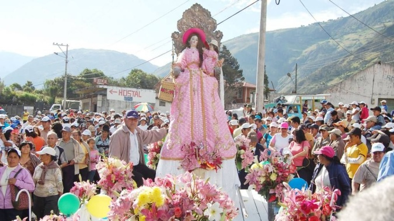
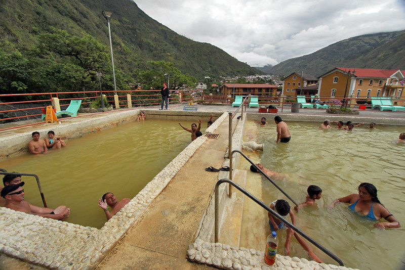
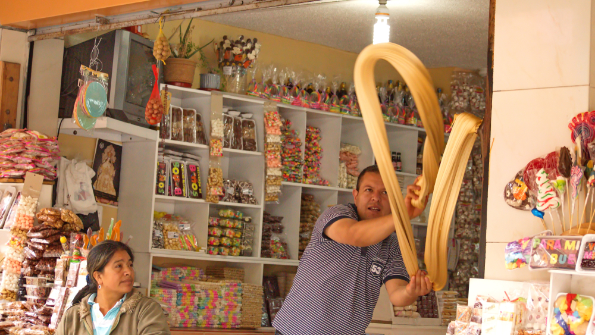

| Inicio | Galeria | Ubicacion Geografica | Sitios Turisticos |
|---|
| Devoción a la Virgen de Agua Santa | Es la patrona del pueblo. Cada año, en octubre, se celebran fiestas religiosas con misas, procesiones, fuegos artificiales, danzas y bandas. Muchos peregrinos caminan desde otras ciudades para visitarla. |
 |
|---|---|---|
| Baños en aguas termales | La gente local y los turistas acostumbran bañarse en piscinas de aguas volcánicas, creyendo en sus propiedades curativas. Es una tradición diaria para muchos habitantes. |
 |
| Elaboración del melcocha | Es un dulce típico hecho de caña de azúcar. En las calles se puede ver cómo lo estiran a mano en ganchos de madera, algo que se ha convertido en una atracción cultural. |
 |